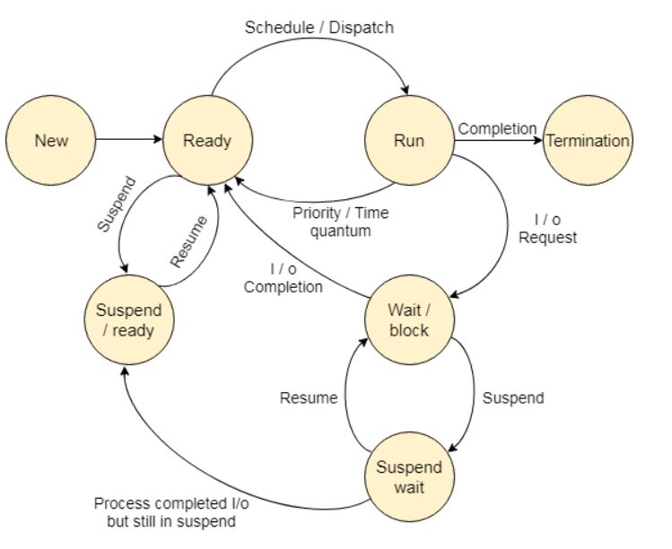

Description: Process just abhi bana hai (e.g., user ne koi app open kiya). OS abhi PCB create karega.
🔀 Transition: New → Ready (jab resources mil jaate hain)
📌 Example: User ne Notepad open kiya, abhi bana hai, run nahi hua.
Process run hone ke liye ready hai, par CPU busy hai.
📌 Example: Notepad CPU ke liye wait kar raha hai.
Process ko CPU mil gaya hai, ab execution ho raha hai.
🔀 Transitions: Run → Terminate / Wait / Ready
📌 Example: Aap Notepad me type kar rahe ho.
Process I/O ke liye wait kar raha hai. Jab tak I/O complete nahi hota, wait state me rahega.
Process ready hai par RAM me jagah nahi thi, to disk me bhej diya gaya.
Process I/O ke wait me tha aur RAM bhi kam thi to disk me bhej diya.
Process complete ho gaya ya terminate kar diya gaya.
From → To Reason
-----------------------------------------------
New → Ready PCB created
Ready → Run Dispatcher selects
Run → Wait I/O Request
Run → Ready Time slice over
Run → Terminate Finished
Wait → Ready I/O complete
Ready → Suspend Ready RAM full
Wait → Suspend Wait RAM full
Suspend Wait → Wait Swapped in
Suspend Wait → Suspend Ready I/O done
Suspend Ready → Ready RAM available
RAM full hone par processes ko disk pe bheja jaata hai (Swap Out). Resume hone par wapas RAM me laaya jaata hai (Swap In).